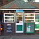

Walk script
Home-
1. Welcome to Marlow
Marlow Museum, Court Garden Car Park
-
2. A batty beginning
Court Garden House
-
3. Higginson's Golden Legacy
Steve Redgrave Statue
-
4. A swan in chains
Thames riverbank, Higginson Park
-
5. Bridged with Budapest
Riverbank opposite Marlow Rowing Club
-
6. Who ate puppy pie?
Under Marlow Bridge
-
7. The one that got away
On Marlow Bridge looking downstream at The Compleat Angler Hotel
-
8. Taming the river
On Marlow Bridge looking downstream at the weir
-
9. Gone in a flash
The jetty at the end of St Peter Street
-
10. Wharves and warehouses
The jetty at the end of St Peter Street
-
11. Boating and fishing
Fisherman's Retreat, St Peter Street
-

12. Counting corners
Seven Corners Passage
-
13. Bold as brass
The Garth, 31 Mill Lane
-
14. Weirs and water wheels
Arched bridge over the mill pond near Marlow Lock
-

15. A new pound
Marlow Lock
-
16. Flooding and football
Gossmore Park
-
17. Journey's End
Opposite Longridge Activity Centre
-
18. A cardboard castle
Riverbank opposite Quarry Wood Hall
-
19. Wild woods
Bench by the river
-
20. Sinister circles
Third kissing gate
-
21. Gritty hollows
Beside Spade Oak Lake
-
22. The mysteries of Peterswood
Old Thatch Cottage, Coldmoorholme Lane
-
23. Horse power
Former site of Spade Oak Wharf
-
24. A gentleman's yacht
Upper Thames Sailing Club
-

25. Gunpowder
Dinnie's Riverside near Bourne End Marina
-
26. A metal donkey
Bourne End railway station
-
27. The story of a riverside town
Bourne End railway station